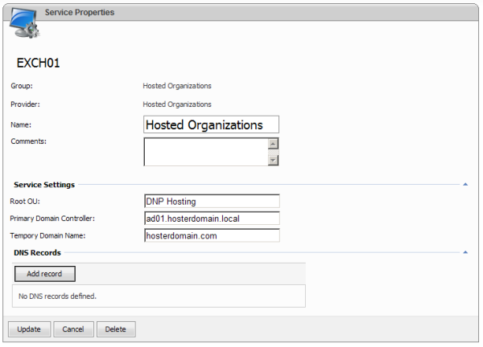

Deploying Hosted Organizations module
Translations:
What is this module for?
"Hosted Organizations" module allows working with objects related to customer’s organization (user accounts, groups and contacts inside AD Organization Unit related to customer) and use those objects for various Enterprise services connected to hosted customer’s organization. For example customer can create user account and later assign Exchange mailbox to this account or make this account SharePoint site owner or set this account as CRM user.
Creating Root Organizational Unit
This Organization Unit will be parent for customer's Organization Units.
-
Open Active Directory Users and Computers (ADUC) snap-in and create a new Organizational Unit (OU) where hosted organization’s sub-OUs will be located, e.g. "WSP Hosting". Please take a note that it will be difficult to change it later so choose it carefully.
Setting ACL for Root Organizational Unit
-
Open the property pages of the root hosting OU and go to Security tab (in case you do not see Security tab go to View > Advanced Features in ADUC). Press Advanced button and uncheck “Allow inheritable permissions from parent…”. Press Copy (or Add in case of Windows Server 2008 R2), OK and Yes in next dialog boxes.
-
Remove permissions for the Pre-Windows 2000 Compatible Access.
-
Press Advanced tab again. Sort permissions by name.
-
Find Authenticated Users. You will find more than one (how many - depends on AD-aware software deployed in your system) string connected to Authenticated Users. Please edit only string connected to Authenticated Users that is applied to This Object only. Open this string. Leave only "List contents" permission for Authenticated Users.
Installing DNP Server component on server where Hosted Organizations module will be deployed.
- Choose AD Domain account
During WSP Server component installation WSP Configuration Studio creates account that will be used as WSP Server website application pool identity.
In order to allow WSP Server to communicate with Active Directory, this account should be AD DOmain account, but not a local server account.
The default name of the account is YOURDOMAIN\WSPServer. In case YOURDOMAIN\WSPServer account already exist in AD, please choose another name for it, for example YOURDOMAIN\WSPServer-SRV01.
- Check WSP Server account membership
WSP Server account must be a member of "Domain Admins" AD group and local "IIS_WPG" ("IIS_IUSRS" for Windows Server 2008) and "Administrators" groups on local server. In case this server is domain controller - "IIS_WPG" ("IIS_IUSRS" for Windows Server 2008) and "Administrators" are AD groups too.
In case Hosted Organizations module is going to be used with Hosted Exchange module – WSP Server account should be added to "Exchange Organization Administrators" (for Exchange 2007) or "Organization Management" (for Exchange 2010) AD group.
Please do not forget to restart WebsitePanel Server pool and web site after you added WSP Server account to appropriate groups. Also you can simple run iisreset on this server if it is not in production.
Setting up Active Directory settings
-
Open server which will host Hosted Organization module in WSP (please follow diagram created on pre-deployment stage in decision where to place this and any other module)
-
Open "Active Directory Settings"
-
Choose "Create Active Directory Accounts"
-
Specify Active Directory domain name
-
Select "None" authentication type.

Setting up Hosted Organizations Service in WSP
-
Add "Hosted Organizations" service.Specify "Preferred Domain Controller" (FQDN).
-
This Domain Controller will be the target for all changes in AD (creating users, OUs, etc).
-
Specify "Root OU" name ("WSP Hosting" by default). It is OU you created earlier following this article.
- Temporary Domain Name ("my-temp-domain.com" by default). Temporary domain name will be used as suffix when creating default domain for the organizations.
